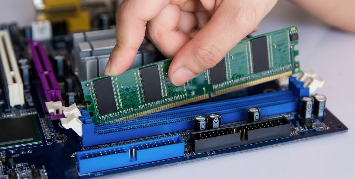

Hardware
Hardware é a parte física do computador, ou seja, o conjunto de aparatos eletrônicos, peças e equipamentos que fazem o computador funcionar. A palavra hardware pode se referir também como o conjunto de equipamentos acoplados em produtos que precisam de algum tipo de processamento computacional.
Componentes de Hardware
Os hardwares são as peças físicas que compõem um computador, como as placas, o monitor, o teclado, a placa-mãe e o disco rígido. Eles são divididos em quatro elementos: Dispositivos de entrada: são os componentes que o usuário conecta, como teclado e mouse.
O que mais vai influenciar na agilidade do computador é a capacidade de armazenamento de dados do hardware e sua eficácia para trocar informações entre os componentes. O Hardware pode ser divido em duas categorias: os internos e os externos.
Sistema Binário é um sistema onde toda a informação é convertida em códigos com os números zero e um. Os componentes de Hardware no computador são sempre ligados entre si, e cada um tem uma função específica que, juntos, tornam a computação possível. O mesmo acontece com outros componentes de Hardware, como celulares, aparelhos de música, etc.

Reparação de Computadores
O serviço de Reparo de Hardware é composto por um conjunto de atividades que envolvem a logística e serviços técnicos necessários para recuperação das funcionalidades originais de um equipamento em falha hardware
Reparo do computador é o processo de identificação, solução de problemas e resolução de problemas e problemas em um computador com defeito. O reparo do computador é um amplo campo que abrange muitas ferramentas, técnicas e procedimentos usados para reparar problemas de hardware, software ou rede / Internet do computador.
Memória RAM (Random Access Memory)
A memória RAM é um dos componentes de hardware mais importantes em qualquer computador. Isso pois ela trabalha junto ao processador para transportar dados e informações dos programas instalados no PC. Todavia, esse tipo de tecnologia não armazena arquivos permanentemente.
O grande diferencial da memória RAM para o HD, por exemplo, é que ela é responsável pela leitura de dados apenas quando requeridos. Confuso? Não se preocupe! Logo abaixo nós vamos te contar tudo sobre as funcionalidades da RAM, como classificá-la e explicar quanto de memória é ideal para você!

Dicas de Tecnologia
Para escolher os melhores componentes devemos pesquisar muito e encontrar o que melhor se encaixa em nosso perfil, uma boa dica é usar sites como o MeuPC, onde você pode encontrar diversas peças exibindo seus preços e também criar o orçamento baseado em qualquer combinação.
O processador, também chamado de CPU, é uma peça de hardware responsável por executar as instruções geradas pelo hardware e software. Isso significa que é ele quem faz todos os cálculos exigidos para um programa funcionar com sucesso.
O SSD (Solid State Drive) é um componente que armazena dados em computadores e consoles de videogame. Ele substitui o HDD (Hard Disk Drive) tradicional e ainda garante mais rapidez ao sistema, graças às velocidades maiores de leitura e gravação.

Vírus e AntiVírus
Em termos mais técnicos, um vírus de computador é um tipo de programa ou código malicioso criado para alterar a forma como um computador funciona e desenvolvido para se propagar de um computador para outro.
Antivírus é um software que detecta, impede e atua na remoção de programas de software maliciosos, como vírus e worms. São programas usados para proteger e prevenir computadores e outros aparelhos de códigos ou vírus, a fim de dar mais segurança ao usuário.
Por isso, separamos para você as 8 maiores inovações tecnológicas de todos os tempos e as que ainda prometem nos surpreender no futuro.